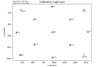

Reading data for different recording systems#
These tutorials cover the basics of loading EEG/MEG data into MNE-Python for various recording devices.


Working with CTF data: the Brainstorm auditory dataset
Working with CTF data: the Brainstorm auditory dataset

Importing Data from Eyetracking devices
Importing Data from Eyetracking devices